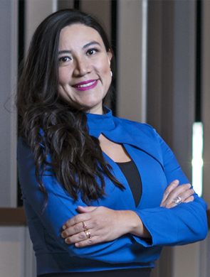
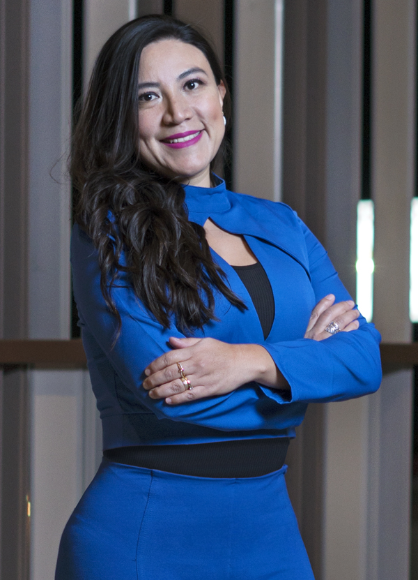

Odont. Karla Berenice
López Almazán

Al rescate de sus dientitos
Revista BS charló con la odontopediatra Karla Berenice López Almazán sobre los puntos clave de la salud bucal en los pacientes pediátricos, a continuación compartimos sus comentarios
Redacción BS
edicionrevistabs@gmail.com

¿Cuál es la importancia de la atención oportuna en odontopediatría?
“Definitivamente, la prevención. Que los niños no pasen por caries, encías inflamadas, dolor, problemas estomacales, dificultad al masticar y comer. Mantener la salud bucal del paciente, o bien, si ya presenta algún problema, regresarle su bienestar, su función al hablar, al masticar, no padecer dolor, o infecciones y que el pacientito vuelva a sonreír”.¿Cuál es la edad ideal para la valoración con el odontopediatra y con qué regularidad hay que visitar al especialista?
“Desde bebés pueden presentar algunas patologías en boca, como diente natal o neonatal, perlas de Epstein, etcétera. Pero, definitivamente, al salir el primer diente son propensos a colonozación por bacterias que producen caries, por lo que se recomienda que su primera visita sea a más tardar al cumplir 1 año de edad. Después de esta primera visita y ya que el paciente esté sano, se recomienda cada seis meses la consulta con el odontopediatra para realizar limpieza dental con aplicación de flúor o remineralización. En los pacientitos que son más propensos a caries, se recomienda cada cuatro meses, y de esta forma mantenerlos sanos y atender a tiempo alguna nueva patología bucal”.¿Cuáles son los principales problemas que atiende en su consultorio?
“Caries, desde pequeñas que se pueden detener o restaurar con una resina estética o un ionómero de vidrio, hasta caries con dolor que requieren de tratamientos pulpares y coronas. Dientes chuecos o maloclusiones, las podemos diagnosticar desde pequeños y corregir por medio de ortopedia maxilar, que consiste en aparatos que estimulan el crecimiento y corrigen a temprana edad”.Desde la odontopediatría, ¿cuáles son las recomendaciones para mantener la salud oral?
“Cepillado de dientes tres veces al día, bajo consumo de azúcares, uso de pastas con flúor, uso de hilo dental. Acudir con el odontopediatra cada seis o cuatro meses para sus limpiezas profesionales, ya que desde la primera consulta se da información a los papás sobre técnica de cepillado y qué pasta debe usar el paciente pediátrico”.¿Algún mensaje o recomendación adicional que quiera enviar a los lectores?
“Recuerden que lo ideal es acudir por prevención bucal, ya que para los pacientitos son tratamientos agradables, sin dolor, sin anestesia, y que implican bajos costos. Entre más pronto se detecte alguna patología bucal, es más fácil eliminarla”.